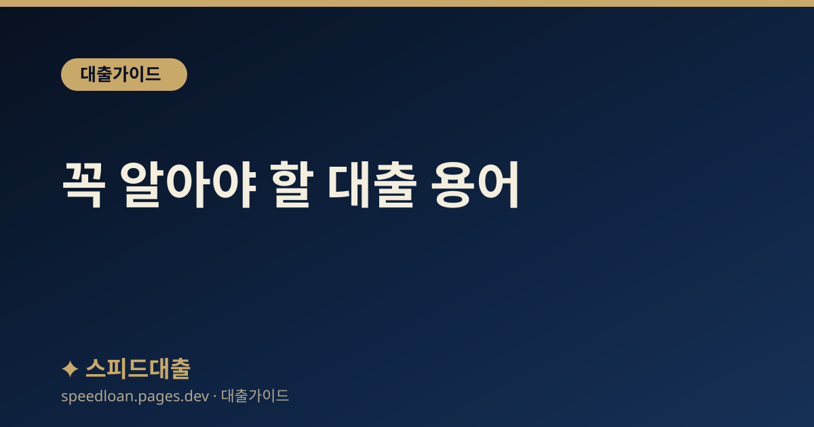

꼭 알아야 할 대출 용어
대출 상담과 약정서에서 자주 만나는 금리·상환·심사 관련 핵심 용어를 알기 쉽게 풀어 정리했습니다.

용어를 알면 조건이 보인다
대출 상담을 받거나 약정서를 읽다 보면 낯선 용어가 쏟아집니다. 뜻을 모른 채 서명하면 나중에 예상치 못한 비용을 마주하거나, 유리한 조건을 놓칠 수 있습니다. 아래 용어만 익혀도 금리 구조, 상환 방식, 심사 기준을 스스로 판단할 수 있어 불필요한 손해를 줄일 수 있습니다. 상담원이 쓰는 표현을 이해하면 질문도 정확해집니다.
특히 큰 금액을 오래 갚아야 하는 대출일수록 용어 하나의 차이가 총비용에 큰 영향을 줍니다. 예를 들어 같은 금리라도 상환 방식이 다르면 매달 내는 돈과 총 이자가 달라지고, 우대금리 조건을 지키지 못하면 예상보다 이자를 더 내게 됩니다. 그래서 서명하기 전에 모르는 용어가 나오면 그냥 넘기지 말고 반드시 뜻을 확인하는 것이 좋습니다.
금리 관련 용어
- 기준금리·가산금리: 대출금리는 보통 '기준금리(코픽스 등) + 가산금리 - 우대금리'로 구성됩니다. 기준금리는 시장 상황에 따라, 가산금리는 개인의 신용도 등에 따라 정해집니다.
- 우대금리: 급여이체·카드실적·자동이체 등 조건을 충족하면 깎아 주는 금리입니다. 조건을 유지하지 못하면 금리가 다시 오를 수 있으므로 유지 요건을 확인해야 합니다.
- 법정 최고금리: 법으로 정한 이자 상한으로 현재 연 20%입니다. 이를 넘는 이자 약정은 무효입니다.
- 연체이자율: 상환이 늦어질 때 적용되는 높은 금리로, 약정금리에 일정 수준이 더해집니다.
- 명목금리·실질부담: 표면 금리 외에 각종 수수료까지 더한 실제 부담을 함께 봐야 정확합니다.
상환 관련 용어
- 원리금균등상환: 매달 같은 금액(원금+이자)을 갚는 방식으로, 초반에는 이자 비중이 크고 뒤로 갈수록 원금 비중이 커집니다.
- 원금균등상환: 매달 같은 원금에 남은 원금에 대한 이자를 더해 갚는 방식으로, 초기 상환액이 크고 점점 줄어듭니다. 총 이자는 원리금균등보다 적은 편입니다.
- 만기일시상환: 대출 기간에는 이자만 내다가 만기에 원금을 한 번에 갚는 방식입니다.
- 거치기간: 원금 상환을 미루고 이자만 내는 기간으로, 거치기간이 끝나면 원금 상환이 시작되어 월 부담이 늘어납니다.
심사·한도 관련 용어
- 한도조회(조건조회): 실제 대출을 실행하지 않고 예상 한도·금리를 확인하는 것으로, 보통 신용점수에 영향을 주지 않습니다.
- DSR: 연소득 대비 모든 대출의 연간 원리금 상환액 비율로, 한도를 좌우하는 핵심 지표입니다.
- DTI: 주택담보대출 원리금에 기타 대출은 이자만 더해 계산하는 비율로, DSR보다 느슨한 편입니다.
- LTV: 담보 가치 대비 대출 가능 비율로, 주택담보대출 등에서 얼마까지 빌릴 수 있는지를 정합니다.
- 신용조회: 실제 대출을 신청할 때 이뤄지는 조회로, 짧은 기간에 여러 곳에 과도하게 신청하면 심사에 불리할 수 있습니다.
약정서에서 놓치기 쉬운 항목
서명 전에 아래 항목을 눈여겨보면 뒤늦은 낭패를 줄일 수 있습니다. 사소해 보여도 총비용에 큰 영향을 줍니다.
- 중도상환수수료: 미리 갚을 때 드는 비용으로, 부과 기간과 요율을 확인합니다.
- 우대금리 유지 조건: 어떤 조건을 얼마 동안 유지해야 우대가 지속되는지 확인합니다.
- 연체 시 불이익: 연체이자율과 기한이익 상실 조건을 미리 파악합니다.
- 금리 변경 주기: 변동금리라면 언제, 어떤 기준으로 금리가 바뀌는지 확인합니다.
상담에서 자주 나오는 표현 풀이
상담원이나 안내문에서 자주 쓰지만 뜻이 헷갈리기 쉬운 표현도 미리 알아 두면 대화가 한결 수월해집니다. 같은 말이라도 상황에 따라 의미가 조금씩 다를 수 있으니, 애매하면 그 자리에서 되묻는 것이 좋습니다.
- 신용대출·담보대출: 신용대출은 담보 없이 신용으로, 담보대출은 주택 등 담보를 잡고 빌리는 대출입니다.
- 한도거래·건별대출: 한도거래는 정해진 한도 안에서 필요할 때 꺼내 쓰는 방식(마이너스통장 등)이고, 건별대출은 한 번에 정해진 금액을 빌리는 방식입니다.
- 고정·변동·혼합: 금리가 만기까지 그대로인지, 주기적으로 바뀌는지, 일정 기간 고정 후 변동으로 바뀌는지를 뜻합니다.
- 우대금리·가산금리: 우대금리는 조건 충족 시 깎아 주는 금리, 가산금리는 기준금리에 더해지는 금리입니다.
- 거치·분할: 거치는 원금 상환을 미루고 이자만 내는 것, 분할은 원금을 나눠 갚는 것을 말합니다.
자주 묻는 질문
원리금균등과 원금균등 중 무엇이 유리한가요?
원금균등은 총 이자가 적은 대신 초기 상환액이 크고, 원리금균등은 매달 부담이 일정합니다. 총 이자를 아끼려면 원금균등이, 매달 안정적인 관리를 원하면 원리금균등이 적합합니다. 본인의 현금흐름에 맞춰 고르시면 됩니다.
한도조회만 해도 신용점수가 떨어지나요?
예상 한도·금리를 보는 한도조회(조건조회)는 보통 신용점수에 영향을 주지 않습니다. 그래서 여러 금융회사의 예상 조건을 부담 없이 비교해 볼 수 있습니다. 다만 실제 대출을 신청하는 신용조회는 기록이 남으므로, 조건을 충분히 비교한 뒤 실제 신청은 한두 곳으로 좁히고 단기간에 여러 곳을 신청하지 않는 것이 좋습니다.
우대금리는 계속 적용되나요?
우대금리는 급여이체·카드실적 등 조건을 유지하는 동안 적용됩니다. 조건이 깨지면 금리가 다시 올라갈 수 있으므로, 어떤 조건을 얼마 동안 유지해야 하는지 약정 전에 확인하시기 바랍니다. 지키기 어려운 조건으로 낮춘 금리는 실제로는 유지되지 못할 수 있으니, 광고 속 최저금리보다 내가 꾸준히 충족할 수 있는 조건인지를 기준으로 판단하는 것이 좋습니다.
기한이익 상실이 무슨 뜻인가요?
연체 등 약정을 어겼을 때 만기까지 나눠 갚을 권리를 잃고 남은 원금을 한꺼번에 갚아야 하는 상태를 말합니다. 이 상태가 되면 연체이자도 남은 원금 전체에 붙을 수 있어 부담이 급격히 커집니다. 큰 어려움으로 이어질 수 있으므로 어떤 경우에 발생하는지 약정서에서 미리 확인하고, 연체가 예상되면 그전에 금융회사와 상담하는 것이 좋습니다.
공식 참고 기관
본 사이트의 콘텐츠는 아래 공공·공식 기관의 공개 자료를 참고하여 작성하며, 구체적인 조건과 최신 제도는 해당 기관에서 직접 확인하시기 바랍니다.
본 사이트는 대출을 직접 제공하거나 중개하지 않으며, 금융상품 가입을 권유하지 않습니다. 모든 정보는 일반적인 참고용이며, 실제 대출 가능 여부, 한도, 금리, 조건은 금융회사 심사와 개인 신용상태에 따라 달라질 수 있습니다.